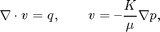
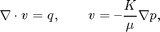

Pressure Solver: Example of a realistic Field Model
In the example, we will solve the single-phase pressure equation

using the corner-point geometry from synthetic reservoir model from the SAIGUP study.
In the example, we will solve the single-phase pressure equation

using the corner-point geometry from synthetic reservoir model from the SAIGUP study.